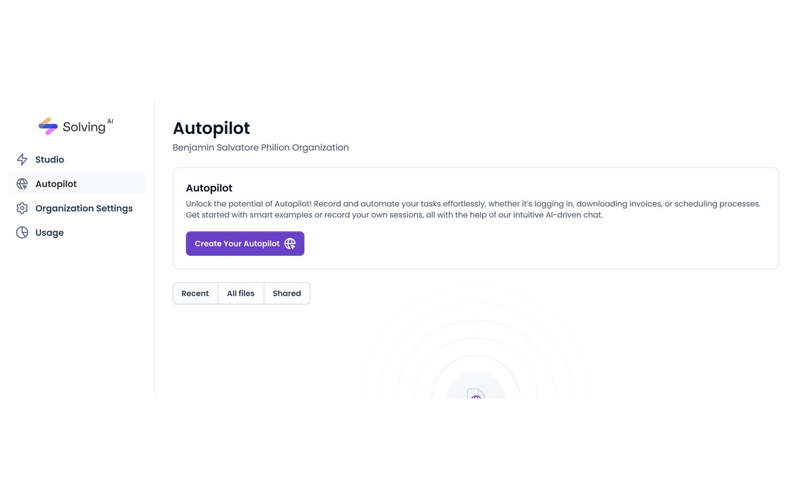

Solving AI · Jun 2024 – Jun 2025
First, Prove It: A Validation Culture for AI Products
Solving AI hired me to redesign their AI workflows. I spent the first weeks building the system that could prove whether any redesign worked. That decision shaped everything that shipped after it.

Users abandoned multi-step AI workflows, and design decisions were driven by opinion, not data.
Refused to redesign blind: built Maze A/B infrastructure and user cohorts first, then redesigned against the evidence and systematized it.
~80% task-comprehension gain (Maze A/B), 30% faster handoff (9 → 6 days), and WCAG AA compliance.

- Basics up front; advanced parameters behind progressive disclosure
- The AI narrates its state: configuring, running, done. No black box
- Confidence sits next to every output, not buried in a tooltip
- AA contrast throughout: 12 audit violations resolved
Solving AI Autopilot dashboard: the production interface I designed for AI-driven task automation
Try the Design / Spec toggle

Node-based workflow builder: visual programming interface for configuring AI automation pipelines
Product demo: hero animation and onboarding flow in action
Everyone wanted the redesign to start on Monday.
Solving AI was building intelligent automation tools for technical and non-technical users alike. People were abandoning multi-step AI workflows mid-process, the team could feel it, and the cure had been chosen before I arrived: a redesign, as soon as possible.
But two problems were tangled together. Comprehension was failing: users could not tell what the AI was doing, what it needed, or how to read its results. And decisions had no evidence: every fix was argued from opinion, because nothing was measured. A redesign would treat the first problem while leaving the machine that produced it untouched.
So I made the call I would spend weeks defending: no screens yet.

User flow analysis: drop-off points identified through session recordings and Maze task data
The costly decision: weeks of work with zero screens to show.
My first deliverable was not a redesign; it was research infrastructure. I implemented Maze-based A/B testing with defined cohorts (technical vs. non-technical, new vs. returning) so that every future design argument could be settled with behavior instead of seniority.
It cost what these decisions always cost: progress reviews with nothing visual to show, and a roadmap that looked stalled from the outside. I defended it with one argument: without a baseline, we would ship a prettier product and never know whether it was a better one.
In parallel I ran a WCAG audit across the product. AI products disproportionately exclude users with disabilities, especially in data visualization and error communication. I mapped every violation and prioritized fixes by user impact.

Maze A/B test results: 80% task comprehension improvement validated across user cohorts
The data pointed where opinion hadn’t.
Task analysis and session data located the real failure points: configuration and results interpretation. Not onboarding, where most internal theories pointed. The redesign finally had a target.
Progressive disclosure for AI configuration. I restructured the configuration flow so that basic settings were front and center, while advanced parameters were accessible but not overwhelming. This reduced cognitive load for new users while preserving flexibility for power users.
Transparent AI feedback. Instead of treating AI processing as a black box, I designed inline progress indicators, confidence scores, and natural-language explanations of what the AI was doing at each step. Users could see why the AI made a recommendation, not just what it recommended.
Accessible data visualization. I redesigned charts and outputs to meet WCAG AA standards: adding text alternatives, keyboard navigation for interactive elements, sufficient color contrast, and screen-reader-compatible data tables alongside visual representations.

WCAG AA compliance achieved: 12 accessibility violations resolved across all critical AI interaction flows
A system designed to scale, not just to look consistent.
I architected a scalable Figma design system built on three pillars:
Figma Variables: design tokens for color, spacing, typography, and elevation, enabling theme switching and systematic updates across the entire product.
Auto Layout architecture: every component built with responsive Auto Layout, ensuring consistent behavior across breakpoints without manual adjustment.
Atomic Design methodology: atoms, molecules, organisms, templates, and pages, each level documented with usage guidelines, interaction states, and engineering specifications.
The result: handoff went from 9 days to 6 per cycle. Engineers could pull specifications from components without a designer decoding every screen.

Handoff workflow transformation: from ad-hoc process (9 days) to design system-driven (6 days), 30% faster
What the team says.
“Juan took full ownership of the design architecture, from wireframes to final UI, and always approached problems with a user-first mindset that really elevated our products. He wasn't just sending over designs — he was actively involved in shaping the product, open to feedback, and always ready to iterate. If you're looking for a UI/UX designer who can think strategically, design beautifully, and work seamlessly with developers, Juan's your guy.”
“Juan David destaca por su capacidad para transformar ideas complejas en interfaces intuitivas y funcionales. Su enfoque centrado en el usuario, su dominio de herramientas como Figma y su sensibilidad por la estética hacen que cada proyecto gane solidez y coherencia visual. No solo aporta soluciones de diseño de alto nivel, sino también pensamiento crítico, proactividad y pasión por crear experiencias digitales que realmente marcan la diferencia.”
Translated from Spanish: “Juan David stands out for his ability to transform complex ideas into intuitive, functional interfaces. His user-centered approach, his command of tools like Figma, and his eye for aesthetics give every project solidity and visual coherence. He brings not only high-level design solutions but also critical thinking, initiative, and a passion for creating digital experiences that truly make a difference.”
Reflection.
If I could do this project again, I would push for quantitative baseline metrics before starting the redesign. We measured improvement, but our "before" data was partially reconstructed from session recordings rather than controlled baseline tests. Starting every project with a measurable benchmark is now a non-negotiable in my process.
This project fundamentally shaped how I approach design: not as an aesthetic exercise, but as a hypothesis to be validated.